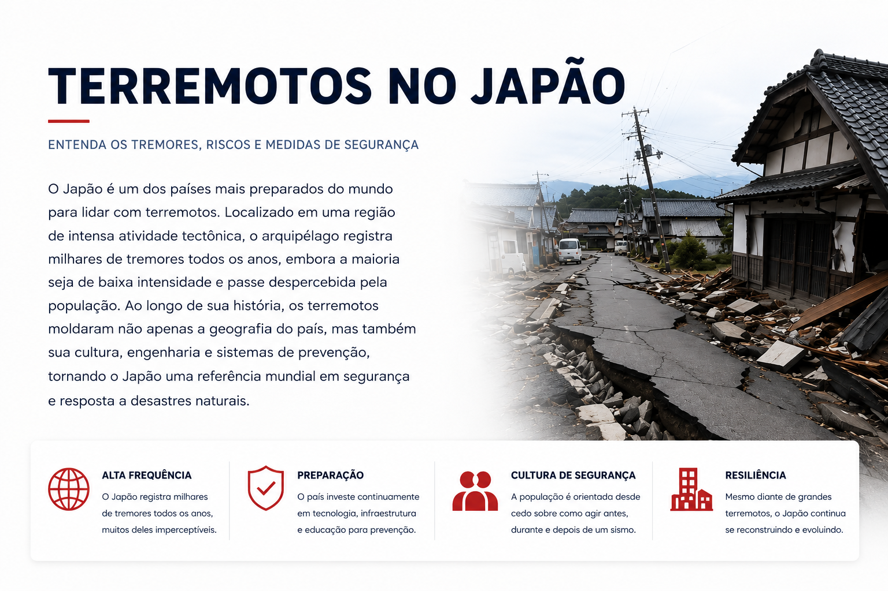
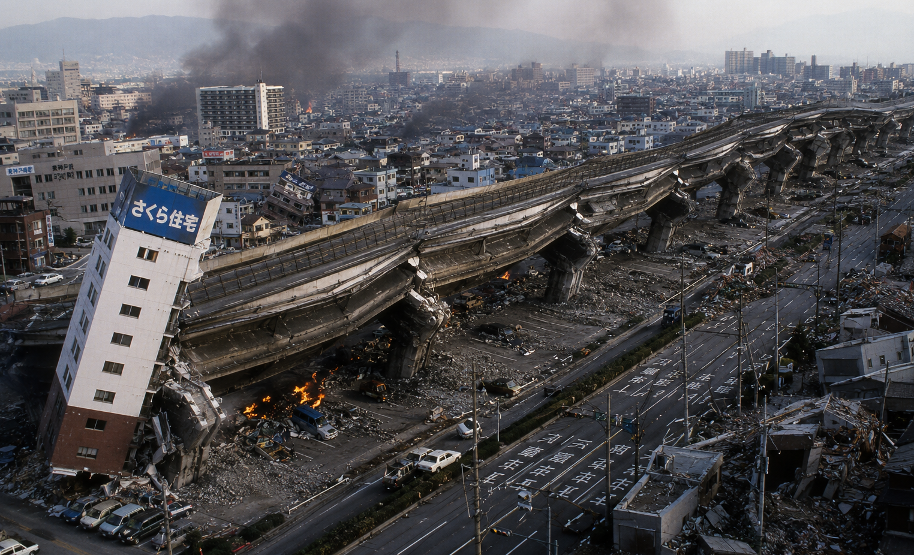
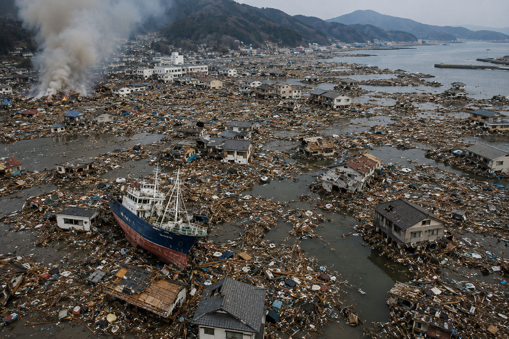

O Japão está entre os países com maior atividade sísmica do mundo. Aqui você vai entender por que os terremotos são tão frequentes, como funcionam os sistemas de alerta e quais medidas de segurança fazem do país uma referência em prevenção de desastres naturai
O Japão registra tantos terremotos porque está localizado em uma das regiões geologicamente mais ativas do planeta. O país fica sobre o encontro de várias placas tectônicas, enormes blocos que formam a superfície da Terra e estão em constante movimento.
Quando essas placas se movem, colidem ou deslizam umas sobre as outras, uma grande quantidade de energia é liberada, provocando os tremores de terra. Essa região é conhecida como Círculo de Fogo do Pacífico, uma área que concentra cerca de 75% dos vulcões ativos do mundo e a maioria dos terremotos mais intensos já registrados.
Devido à sua localização privilegiada, mas também desafiadora, o Japão experimenta milhares de tremores todos os anos. A maioria deles é tão fraca que passa despercebida pela população, mas alguns podem causar danos significativos, razão pela qual o país investe constantemente em tecnologia, monitoramento e sistemas de prevenção.
Essa convivência frequente com os terremotos fez com que os japoneses desenvolvessem uma das estruturas de segurança e preparação para desastres naturais mais avançadas do mundo.
Você sabia?O Japão registra mais de mil terremotos perceptíveis por ano. Felizmente, a maioria deles é de baixa intensidade e não causa danos à população.

No Japão, a intensidade dos terremotos é medida por uma escala própria chamada **Shindo (震度)**. Diferente da escala de magnitude, que mede a energia liberada pelo terremoto, a escala Shindo mostra o quanto o tremor foi sentido pelas pessoas e o impacto causado em cada região. A escala vai de 0 a 7, sendo que os níveis mais altos indicam tremores capazes de causar danos significativos a edifícios, estradas e outras estruturas. Como um mesmo terremoto pode ser sentido de formas diferentes dependendo da localização, cada cidade recebe sua própria classificação de intensidade. De forma simplificada, os níveis funcionam da seguinte maneira:
Graças a uma extensa rede de sensores espalhados pelo país, a Agência Meteorológica do Japão consegue medir rapidamente a intensidade dos tremores e emitir alertas para a população poucos segundos antes das ondas sísmicas mais fortes chegarem.
Isso ajuda muito quem mora no Japão e vê notificações no celular com valores como 震度4, 震度5弱 (5-) ou 震度5強 (5+) e não sabe exatamente o que significam. 🇯🇵🌏

Saber como agir durante um terremoto pode fazer toda a diferença para a sua segurança. Embora muitos tremores no Japão sejam fracos, é importante estar preparado para situações mais intensas.
Se você estiver dentro de um prédio, mantenha a calma e procure abrigo sob uma mesa resistente ou outro móvel firme. Proteja a cabeça e o pescoço com os braços e fique longe de janelas, espelhos, estantes e objetos que possam cair.
Caso esteja em um elevador, pressione os botões dos andares mais próximos e saia assim que possível. Nunca utilize elevadores para evacuar um prédio após um terremoto.
Se estiver na rua, afaste-se de postes, placas, fachadas de edifícios e fios elétricos. Procure uma área aberta e permaneça atento a possíveis quedas de objetos.
Após o tremor principal, siga as orientações das autoridades e fique atento aos alertas emitidos pelo celular, televisão ou rádio. Em áreas costeiras, um terremoto forte pode gerar risco de tsunami, exigindo evacuação imediata para locais elevados.
No Japão, escolas, empresas e órgãos públicos realizam treinamentos frequentes para que a população saiba exatamente como agir em situações de emergência. Essa preparação é um dos fatores que ajudam a reduzir os riscos durante grandes terremotos.
Muitas pessoas acreditam que sair correndo do prédio é a atitude mais segura, mas isso pode aumentar o risco de acidentes. Durante um terremoto, fachadas, vidros, placas, telhas e outros objetos podem se desprender dos edifícios e cair sobre quem estiver na rua. Por isso, se você estiver dentro de uma construção segura, o mais recomendado é se proteger no local até que o tremor diminua.
Os elevadores podem parar de funcionar devido à falta de energia ou por danos causados pelo terremoto. Além disso, existe o risco de a pessoa ficar presa entre andares. Por esse motivo, as autoridades japonesas recomendam utilizar as escadas para evacuação após o tremor e evitar o uso de elevadores em situações de emergência.
O movimento provocado pelo terremoto pode quebrar vidros e lançar estilhaços em várias direções. Janelas, portas de vidro, espelhos e divisórias são considerados pontos de risco durante um tremor. O ideal é afastar-se dessas áreas e procurar abrigo sob uma mesa resistente ou próximo a paredes estruturais seguras.
Em regiões costeiras, um terremoto forte pode gerar tsunamis poucos minutos após o tremor. Mesmo que o mar pareça calmo, ondas perigosas podem estar se aproximando. Sempre que houver um alerta oficial de tsunami, é fundamental seguir as orientações das autoridades e dirigir-se imediatamente para áreas mais altas e seguras. Esperar para confirmar visualmente o perigo pode custar um tempo precioso.
Importante: Em muitos terremotos graves no Japão, os maiores riscos não vêm do tremor em si, mas da queda de objetos, incêndios e tsunamis que podem ocorrer após o evento principal.
O alerta pode chegar ao celular mesmo quando você não possui aplicativos instalados. Muitos smartphones vendidos no Japão recebem notificações de emergência diretamente do sistema nacional de alertas.

O Japão possui um dos sistemas de alerta de terremotos mais avançados do mundo. Conhecido como **Sistema de Alerta Antecipado de Terremotos (EEW - Earthquake Early Warning)**, ele utiliza milhares de sensores espalhados por todo o país para detectar rapidamente os primeiros sinais de atividade sísmica.
Quando um terremoto é identificado, computadores analisam sua localização, profundidade e intensidade em questão de segundos. Se houver risco de tremores fortes, um alerta é enviado imediatamente para celulares, emissoras de televisão, rádios, estações de trem e diversos sistemas públicos.
Embora o aviso geralmente chegue apenas alguns segundos antes do tremor principal, esse curto intervalo pode ser suficiente para que as pessoas procurem abrigo, se afastem de objetos perigosos ou interrompam atividades de risco. Em muitos casos, trens-bala, elevadores e equipamentos industriais são paralisados automaticamente para aumentar a segurança.
O alerta é acompanhado por um som característico que muitos moradores do Japão reconhecem instantaneamente. Ao ouvir esse aviso, a recomendação é manter a calma e buscar proteção imediatamente.
Graças aos investimentos em tecnologia e prevenção, o sistema japonês é considerado uma referência mundial e ajuda a reduzir os impactos causados pelos terremotos todos os anos.
O famoso Shinkansen, conhecido mundialmente como trem-bala japonês, possui sistemas automáticos capazes de reduzir a velocidade ou até parar completamente quando um forte terremoto é detectado. Sensores instalados ao longo das linhas férreas monitoram constantemente a atividade sísmica, ajudando a proteger milhões de passageiros todos os anos.
Saiba mais sobre o Shinkansen →Ao longo de sua história, o Japão enfrentou alguns dos terremotos mais devastadores já registrados. Esses eventos causaram grandes perdas humanas, destruíram cidades inteiras e ajudaram a moldar as rígidas normas de construção e os avançados sistemas de prevenção existentes atualmente.
Embora milhares de tremores ocorram todos os anos no país, alguns deles ficaram marcados para sempre na memória dos japoneses devido à sua intensidade e aos danos causados.

Em 17 de janeiro de 1995, a cidade de Kobe e regiões vizinhas foram atingidas por um terremoto de magnitude 6,9.
Apesar de sua magnitude ser menor do que outros terremotos históricos, o epicentro estava muito próximo de áreas densamente povoadas. Estradas elevadas desabaram, edifícios foram destruídos e mais de 6 mil pessoas morreram.
O desastre revelou falhas em estruturas antigas e levou a importantes atualizações nos padrões de construção antissísmica do Japão.

Em 11 de março de 2011, o Japão sofreu o terremoto mais forte já registrado em sua história moderna. Com magnitude 9,0, o tremor ocorreu no Oceano Pacífico, próximo à região de Tōhoku.
O terremoto foi tão poderoso que deslocou partes do território japonês em vários metros e provocou um gigantesco tsunami que atingiu a costa nordeste do país.
As ondas ultrapassaram os sistemas de proteção em diversas cidades costeiras, causando destruição em larga escala e desencadeando o acidente nuclear na Usina Nuclear de Fukushima.
Mais de 18 mil pessoas morreram ou desapareceram em consequência do terremoto e do tsunami, tornando este um dos maiores desastres da história recente do Japão.
👉 Saiba mais sobre os tsunamis no JapãoMuitas das maiores tragédias associadas aos terremotos no Japão não foram causadas pelo tremor em si, mas pelos tsunamis que vieram logo depois. Em alguns casos, as ondas chegaram à costa poucos minutos após o terremoto, deixando pouco tempo para evacuação.
Entenda como os tsunamis se formam →
Muitas famílias japonesas mantêm uma mochila de emergência chamada 防災バッグ (Bōsai Baggu) pronta para ser levada rapidamente em caso de terremotos, tsunamis ou evacuações. Algumas empresas e escolas também realizam treinamentos periódicos para que todos saibam exatamente onde estão os abrigos e rotas de fuga mais próximos.
Última atualização: Julho de 2026
↑